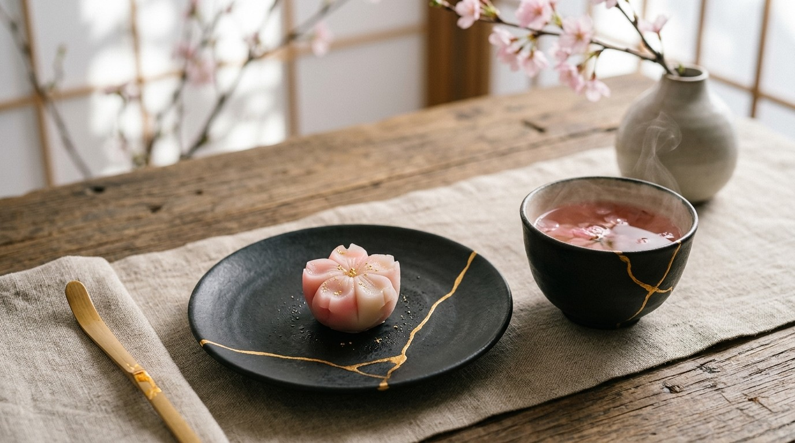

✨ Em Breve
✨ Em Breve
Pães & Salgados Artesanais
Novas receitas de massas e preparos salgados já estão no forno e serão publicadas em breve no repositório.
Bem-vindo(a) ao meu espaço digital de gastronomia. Aqui compartilho receitas testadas, segredos de massas macias e sobremesas que aquecem o coração.

Escolha uma delícia para preparar no seu próximo café ou momento especial
 🍫 Favorito
🍫 Favorito
Massa úmida, macia e muito saborosa. Perfeito para qualquer café da tarde ou comemoração em família.
 ☁️ Clássico
☁️ Clássico
Estrutura aerada e leve, a base ideal e versátil para recheios refinados, caldas e bolos de aniversário.
✨ Em Breve
Novas receitas de massas e preparos salgados já estão no forno e serão publicadas em breve no repositório.
Registros fotográficos de passeios, detalhes e cenários que inspiram a cozinha
Cozinhar é expressar afeto através de sabores e memórias. Criei este espaço e o caderno de receitas no GitHub para reunir preparos caseiros de confeitaria, registrar técnicas e compartilhar com quem também ama colocar a mão na massa.